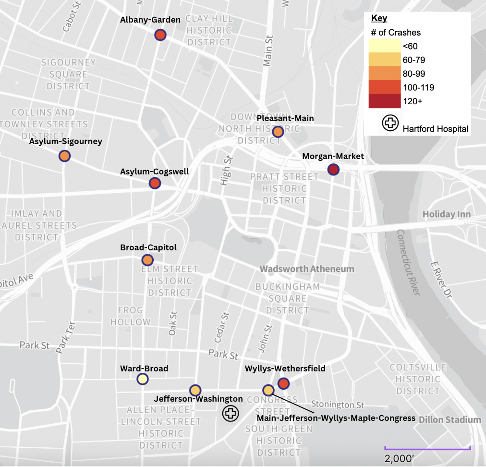
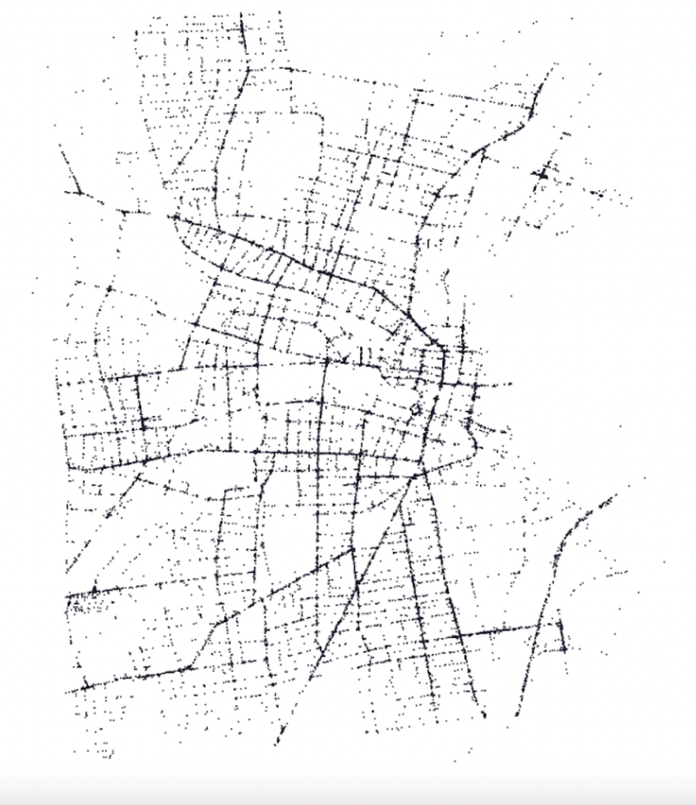
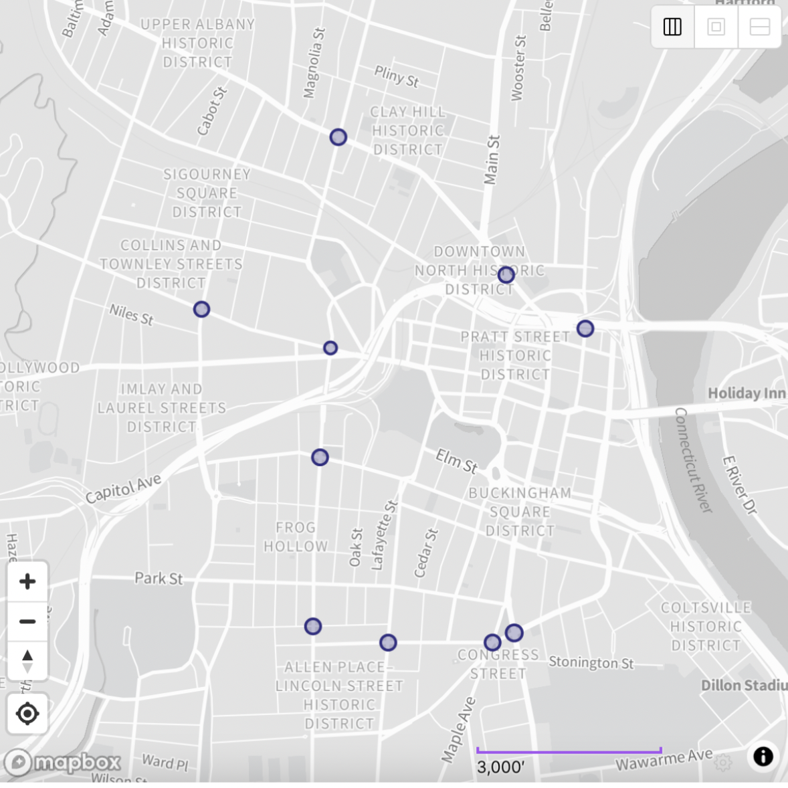
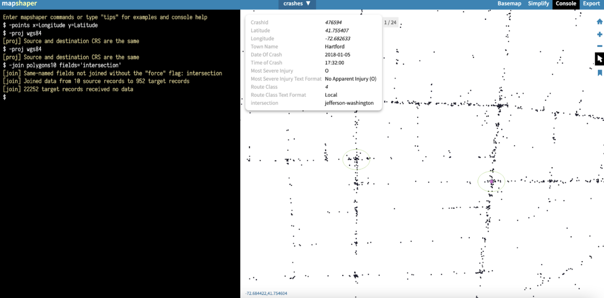

by Jess Cruz and Mia Rodriguez
Last updated on April 19, 2023
for Data Visualization for Allwith Prof. Jack DoughertyTrinity College, Hartford CT, USA
Based on UCONN Data, Hartford had the third highest crash rate of the five largest cities in Connecticut: 22668 crashes per 100,000 of people. This is particularly important because one may assume that Hartford has that crash rate due to the population, as Hartford has the fourth highest population in Connecticut (Connecticut Demographics by Cubit, 2021). However, as shown in Figure 2, Hartford has a higher number of non-interstate crashes between 2018-2022 than both Bridgeport and Stamford, even though both cities have higher populations than Hartford. Hartford is also tied with New Haven for the highest number of non-interstate crash fatalities when normalized by population size (presented in Figure 2). Therefore, there is a larger concern for prevention of crashes in Hartford because other cities, for example Stamford, experiences less crashes and crash fatalities than Hartford despite having greater population sizes.
Figure 1 as seen above, shows Connecticut's five largest cities, organized from left to right by population, and their respective numbers of crashes from 2018-2022.
Figure 2 as seen above, shows crash rates per 100,000 people in the five largest cities in Connecticut, sorted by population size (highest on left). Despite being fourth in population size, Hartford has the third highest crash rate, higher than two cities larger than it.
Figure 3, as seen above, shows the number of crash fatalities in the largest cities in Connecticut.
Figure 4 as seen above, shows that Hartford and New Haven have significantly higher numbers of crash fatality rates for their population size than other large cities in Connecticut.
Moreover, many people may assume that most crashes occur at intersections because intersections, in contrast to corridors, have traffic flow in multiple directions along with numerous intersection-specific traffic rules such as traffic lights and stop signs. Thus, to approach the high crash problem in Hartford, we must answer this question: Which Hartford intersections have had the most crashes, by type, in recent years? By researching the intersections with higher percentages of crashes and the types of crashes, city planners can identify areas of conflict and what type of interventions are needed. These interventions distinguish which street facilities, including speed limits, street lighting, speed bumps, sign placement, etc., need improvement and where, locationally, they must be improved. Furthermore, by breaking the crashes down by injuries, we can further pinpoint which intersections are causing the most serious levels of injuries to which city planners can focus and fund most changes in those areas.
While only a small percentage of Hartford’s total crashes happen at major intersections, it’s still important to find out which ones have the highest levels due to the high count of intersections in Hartford.With this limited number of intersections, it is hard to determine what this data means for Hartford as a whole. However, we found that from the Hartford Crash (Heat) Map, the ten major intersections that we selected based on indication of high density of crashes, make up slightly over 4% of crashes in Hartford. Notably, Morgan St and Market St make up almost 1% of the total crashes in Hartford as a singular intersection (shown in the Figure 5 below). Although this is a small percentage, out of the many corridors and intersections in the city of Hartford, these numbers are significant.
Figure 5 as seen above, shows the percentage of crashes in Hartford that occurred at individual intersections from 2018-2022.
Furthermore, as seen in Figure 6 we have found that these 10 intersections, while having high concentrations of crashes, had low numbers of fatal crashes. The chart shows the number of crashes at ten major intersections in Hartford, sorted by the most serious injury in each crash. It shows that there is no correlation between frequency of accidents and severity of accidents.
Figure 6, as seen above, shows the number of crashes at ten major intersections in Hartford, sorted by the most serious injury in each crash. It shows that there is no correlation between frequency of accidents and severity of accidents.
Based on our visualizations, we are unable to determine the causes of these crashes because we do not have sufficient information needed which could include factors such as which intersections have stop lights, converging multi-lane roads, etc. Although this is true, we can offer two notable trends in certain intersections based on what we can see in the map below. Firstly, 3 out of 10 of these high-density crash intersections involve a 3-or-more road intersection. One of which, is a 5-road intersection, Main-Jefferson-Wyllys-Maple Ave-Congress, and two of which are in close proximity (within 150 meters or less than 0.1 miles) to a 3-or-more road intersection, Asylym-Cogswell and Wyllys-Wethersfield. This may indicate that close proximity to multiple roads and directions of traffic may be a variable in the crash rates. Secondly, 2 high-density crash intersections, Jefferson-Washington and the 5-road intersection, are within 800 meters (0.5 miles) away from the Hartford Hospital and its Emergency Room. Also, the intersections are both located on Jefferson street which borders the hospital. This may also indicate that with the urgency of potential hospital and ER visits, higher driving speeds may exist on these intersections causing higher crash rates.
Thus, albeit there is not an overarching trend for the majority of high-crash intersections, there are trends at which the city of Hartford can use for change. These changes can include...

To find this data, we saved this list of Hartford crashes (not including Interstate crashes) provided by Jack from the UConn Crash Repository. We uploaded his data into mapshaper in order to create a map of Hartford to be combined with our intersection data later on. Using the “console” tab, we typed “-points x=Longitude y=Latitude” and “-proj wgs84” to make the points take the shape of Hartford rather than a grid.
 Then, to determine the intersections that have had a high number of crashes since 2018, we looked at the Hartford crash heat map with bright red areas in circular shapes above intersections which represent high density of crashes at the location it covers. Although the ten intersections we picked may not be definitively the intersections with the highest frequencies of crashes, a high occurrence of crashes still exists. Also, it must be noted that in January 2023, the CT Insider published a story on high-crash intersections in which they ranked the top 10 intersections with the highest crashes from 2020-2022 which has much variation from ours. However, their data was based on a different time frame than ours, and we are unsure of what they considered to be a part of each intersection which can explain the variability in our results. We then used placemark to create polygons in each of those intersections and named them according to their location as well as titled them as intersections. We exported this as a geojson file so that we will be able to add to it and eventually combine it with the mapshaper map.  After that, we imported the placemark file into mapshaper and merged it with the existing map by typing “-join polygons10 fields=’intersection’” and then exported it as a geojson.  The above images show the mapshaper map of crashes, the placemark map of intersections, and the combined mapshaper map.Connecticut Cities by Population. https://www.connecticut-demographics.com/cities_by_population
Connecticut Crash Data Repository. https://www.ctcrash.uconn.edu/ Dylan, Jonah. “These Are Hartford’s 10 Most Dangerous Intersections, Data Shows.” CT Insider, 16 Jan. 2023, https://www.ctinsider.com/news/article/Hartford-dangerous-intersections-crashes-17716677.php. Hartford Crashes. https://datavizforall.org/hartford-crashes/ Hartford-Intersection-Crashes Repository https://github.com/jessmcruz/hartford-intersection-crashes